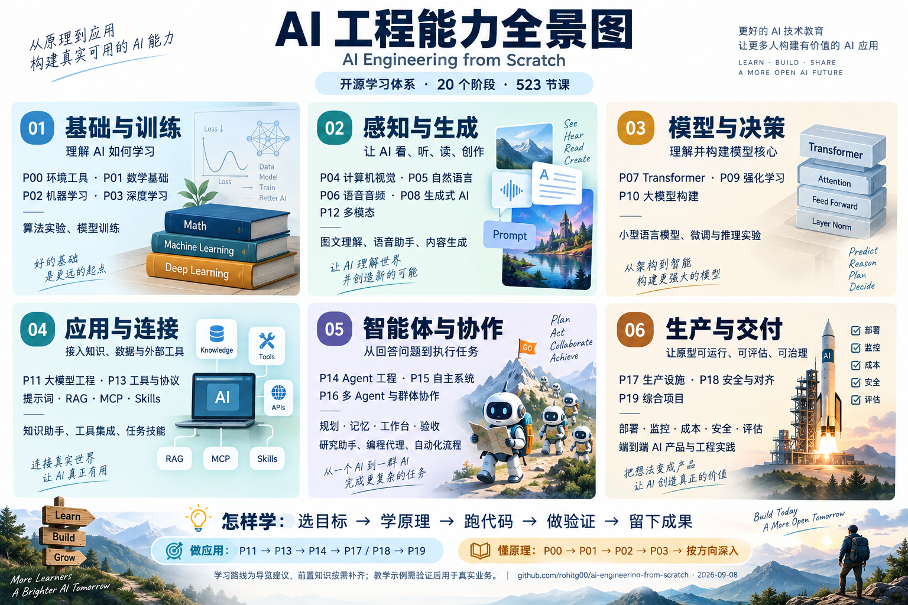

{kind=link}
我们后期可以做的最小实践
根据一组项目资料，生成带出处的项目简报。先准备固定问题，再依次验证检索、字段提取、生成和引用。
检查资料不足、冲突和错误引用；记录人工修订时间、成功率、时延与单次成本。当前只是保留建议，不自动启动实践。
AI ENGINEERING FROM SCRATCH
把 AI 工程知识整理成一张可查阅的学习地图。先知道能做什么，有具体问题时，再走进相关技术和课程。

保留为后续学习与工程参考，暂不启动完整课程。已完成导览整理；课程尚未逐一学习或运行。教学示例需要真实数据与调用验证，才能判断业务效果。
01 / CAPABILITY SCOPE
先识别你需要的能力，再查看相关阶段与技术。模块之间可以组合，不是六个相互独立的产品。
02 / CHOOSE A PATH
路线是我们的导览建议；有仓库专题清单时，以清单和具体课程的前置要求为准。
03 / CURRICULUM ATLAS
展开查看内容、前置知识、验收建议与逐课入口。GitHub 链接固定到研究版本；在线课程指向上游当前版。
学习备忘：状态由你手动选择，仅保存在本浏览器。“已验证”指你选定的实践目标，不表示整个阶段全部学完。
04 / TECHNOLOGY DICTIONARY
按图中模块分类，解释技术是什么、何时用。搜索同时匹配中英文、含义与用途。
05 / LEARN WITH EVIDENCE
根据一组项目资料，生成带出处的项目简报。先准备固定问题，再依次验证检索、字段提取、生成和引用。
检查资料不足、冲突和错误引用；记录人工修订时间、成功率、时延与单次成本。当前只是保留建议，不自动启动实践。
抽查的 Agent 入门代码使用固定脚本模拟模型；RAG 入门示例使用简化检索与模拟生成。
“读懂概念”“运行模拟”“真实调用”“业务验证”是四种不同证据。不要把前一种直接当成后一种。
真实数据小实验 → 固定评估集 → 业务 Skill 与工具 → 状态和验收机制 → 有收益依据的持续执行与多 Agent。
06 / CONTEXT & SOURCES
官方课程帮助形成协作方法和产品实践；本库帮助查原理、做工程实验。两边都包含应用开发内容。
课程标题保留上游原文；中文释义、模块分组、学习时机和验收建议为我们的归纳。目录不是逐课质量审核；协议、模型与 SDK 的实际用法需在学习时核对官方资料。
上游 README 与目录元数据依据 MIT 许可引用并随附许可文件。全景图为用户认可的 AI 生成导览，不是上游官方图，也不是软件能力测试结果。
07 / KEEP THE GUIDE
手册包含完整术语、阶段目标、学习路线、比较结论与来源。原图用于分享，文档用于细读。